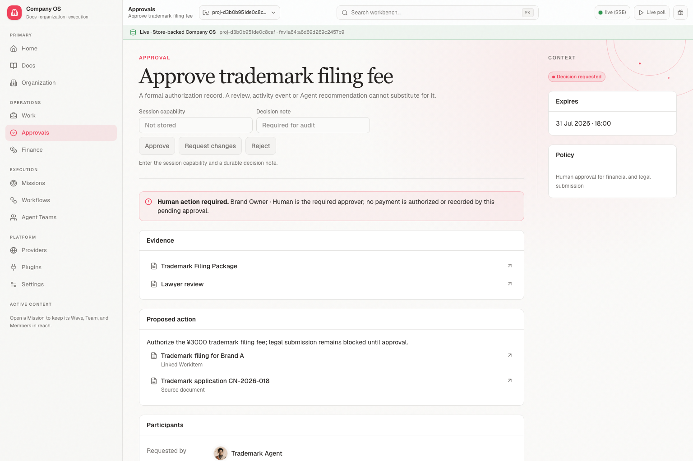
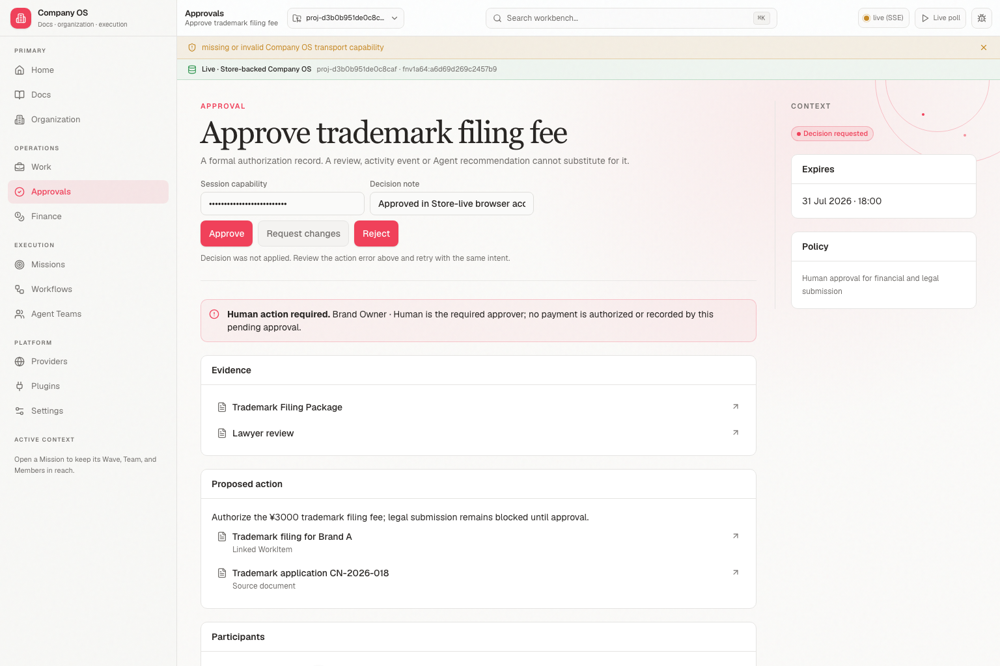
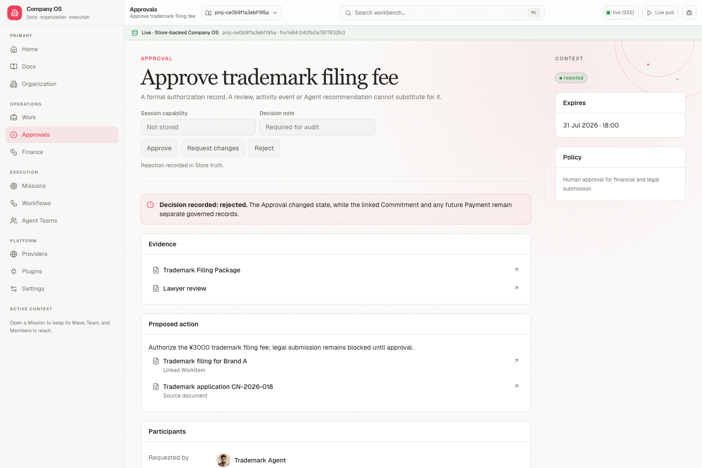

1 · Requested
Store-live Approval before a Human decision.

Requested → invalid capability denied → Human approved or rejected. The decision changes only the Approval; the ¥3,000 Commitment remains pending and Payment remains absent.
Store-live Approval before a Human decision.

The browser remains on requested; no ActionCommand effect is applied.

Approval is approved; Commitment stays pending and Payment stays absent.
A separate isolated Store proves the native rejected branch.
